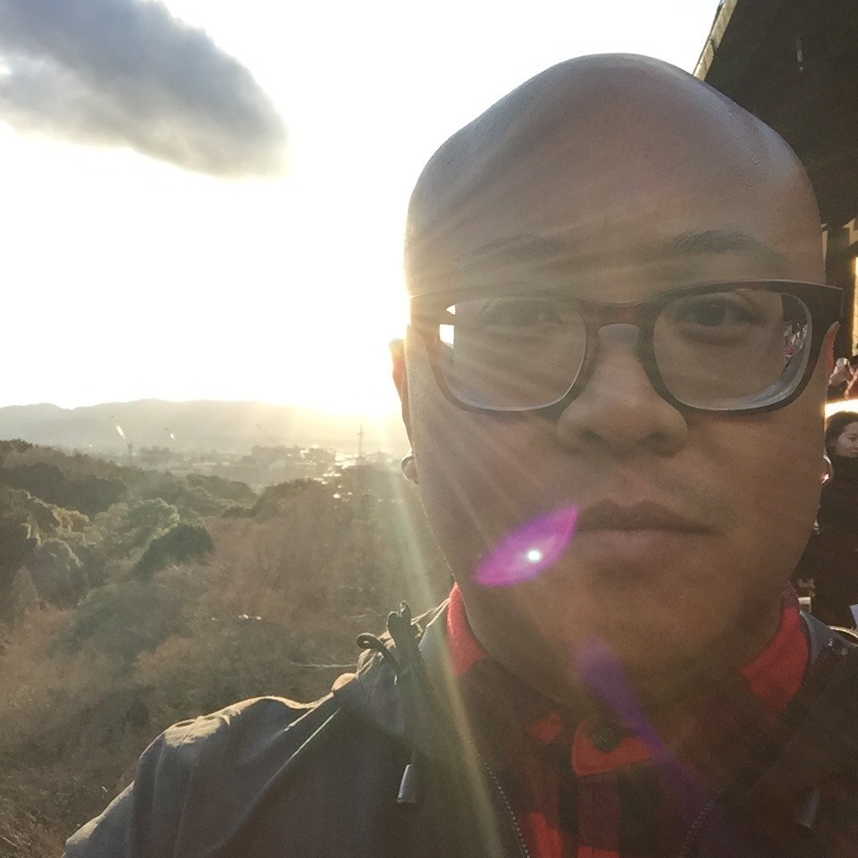

About Me
I'm an audio engineer and musician, living in Orange County. I've been working in the music industry for the past 20 years, starting out as a musician in a punk band in 1998. I've been lucky to tour the world, playing with bands that I looked up to growing up. To this day, I've continued to make albums, both solo and in bands.
In 2005, I shifted gears towards a focus on the "Behind The Scenes" aspect of the music industry. I travel working as a touring Front-of-House Live Sound Engineer, a Stage Manager, as well as a Tech. During my off-time from the road, I produce and engineer records in recording studios across Southern California, but most frequently at my studio, Bright Lights, in Santa Ana.
After 20 years of living out my childhood dreams beyond my imagination working in the music industry, I am focused on becoming a Full Stack Web Developer. I am currently enrolled at the UCI Coding Bootcamp, with aspirations to strengthen my skillset and to forge a new path with an exciting and new career.
Connect With Me